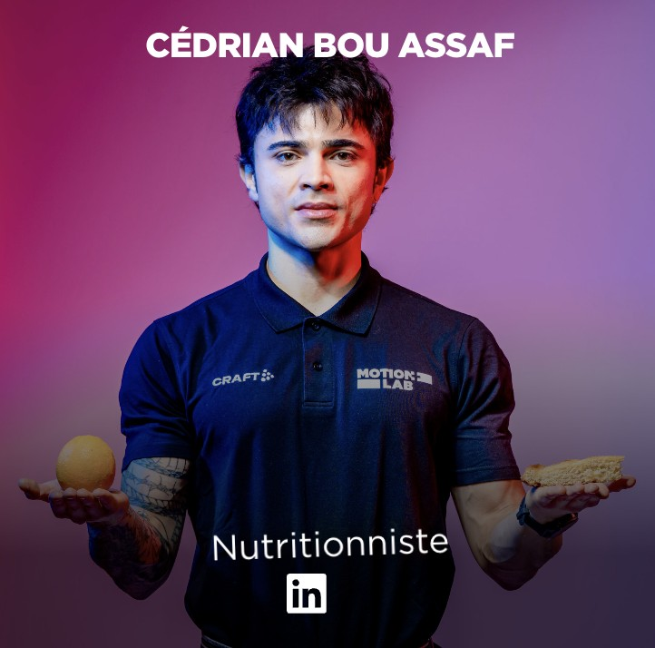

Le scan DXA mesure avec précision votre masse musculaire, masse grasse et densité osseuse — là où la balance échoue depuis des années. Disponible à Lausanne, résultats immédiats.
Elle vous donne un chiffre global — mais elle ne distingue jamais muscle de graisse, ne voit pas la densité de vos os, et ignore les déséquilibres entre vos membres.
Voir ce que mon corps cache vraiment →Choisissez votre créneau dans l'agenda ci-dessous. Confirmation immédiate par email avec toutes les informations pratiques.
Au Centre médical MotionLab — allongez-vous sur la table, l'appareil scanne votre corps entier. Aucune douleur, aucune injection, aucune préparation.
Cédrian vous remet votre rapport complet imprimé, expliqué en consultation sur place. Vos données, claires et actionnables dès aujourd'hui.
« J'avais perdu 4 kg selon la balance mais le DXA m'a montré que j'avais perdu 2 kg de muscle. Sans ce scan, j'aurais continué dans la mauvaise direction. »
« Résultats clairs, explications accessibles. J'ai enfin compris pourquoi mon entraînement ne fonctionnait pas — mon ratio muscle/graisse était complètement déséquilibré. »
« Le plan nutritionnel a tout changé. En 3 mois, j'ai gagné 1.8 kg de muscle et perdu 3.2 kg de graisse — le DXA de suivi l'a confirmé chiffres à l'appui. »

Nutritionniste · Centre médical MotionLab, Lausanne
Nutritionniste formé en sciences du sport et de la nutrition evidence based, j'accompagne mes patients avec des données précises plutôt qu'avec des estimations. Trop de personnes ajustent leur alimentation et leur entraînement sur la base de chiffres inexacts — la balance, l'IMC, la balance à impédance. Aucun de ces outils ne vous dit la vérité sur votre corps.
Le scan DXA change ça radicalement. En 20 minutes, vous repartez avec un rapport médical précis, complet et actionnable — une base solide pour vos décisions nutritionnelles et sportives.
Bachelor en nutrition du sport
Formation académique en nutrition appliquée à la performance
Diplôme en sciences de l'entraînement et de la nutrition evidence based
Approche scientifique et basée sur les preuves
Centre médical MotionLab
Chemin du Petit-Flon 29 · 1052 Le Mont-sur-Lausanne
+400 scans DXA réalisés
depuis 2024 sur la région lausannoise
Toutes les offres incluent le scan complet et les résultats imprimés immédiatement.
La mesure complète de votre composition corporelle, interprétée en consultation.
Le scan complet avec un plan d'action nutritionnel personnalisé — transformez vos données en résultats concrets.
Trois scans à utiliser librement sur 12 mois — idéal pour suivre une transformation physique.
Centre médical MotionLab · Chemin du Petit-Flon 29, 1052 Le Mont-sur-Lausanne
Annulation gratuite · Résultats immédiats · Paiement sur place · 079 347 94 64